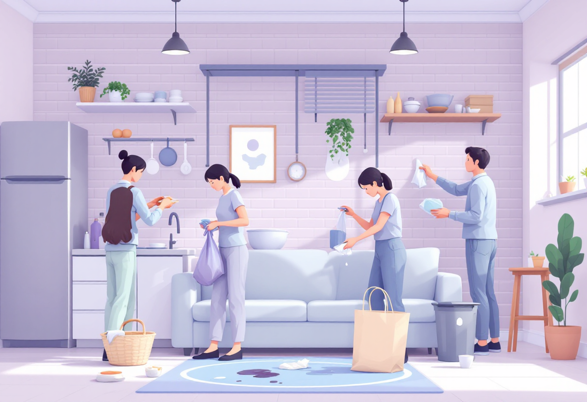
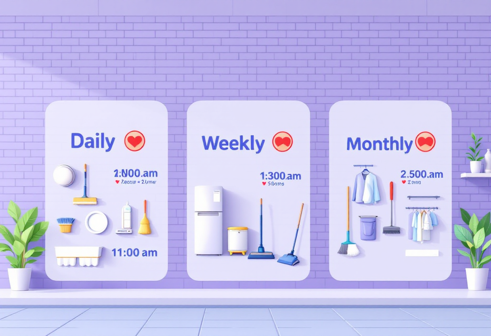
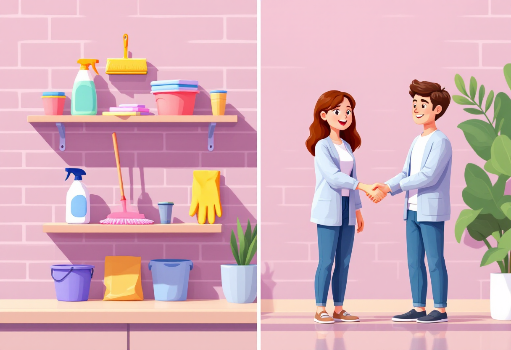

Прибирання без хаосу
План прибирання, який дозволяє підтримувати порядок без вигорання.

Базовий підхід
Прибирання — це не марафон раз у місяць, а невеликі дії щодня. Менше хаосу — менше стресу.
- Розкладай речі відразу після використання.
- Мий посуд одразу після їжі.
- Витирай поверхні, коли бачиш плями чи крихти.

План на тиждень
Маленькі кроки щодня — і вдома чисто без перевтоми.
- Понеділок: ванна + поверхні.
- Вівторок: підлога у кухні.
- Середа: пил у кімнатах.
- Четвер: заміна постелі.
- П’ятниця: пилосос.
- Субота: кухня, холодильник.

Система «5 хвилин»
Якщо немає сил на повне прибирання — роби хоча б одну маленьку дію 5 хвилин на день.
- Помити одну полицю.
- Викинути сміття.
- Скласти одяг у шафі.
- Пропилососити одну кімнату.